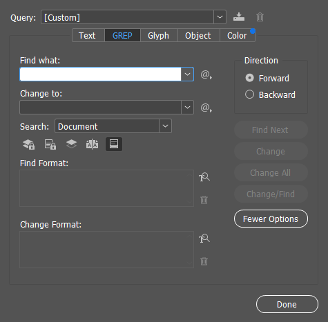

Introdução
O que é GREP?
GREP é uma sigla que significa Global Regular Expression Print. É um programa de busca de texto avançada, que usa padrões de caracteres chamados expressões regulares para encontrar padrões complexos de caracteres em textos.
Este curso é fortemente baseado no livro Introdução às expressões regulares de Michael Fitzgerald. Seu conteúdo foi ligeiramente adaptado em alguns momentos para torná-lo um pouco mais didático e para transpor o conteúdo para a realidade da sua aplicação dentro do InDesign.
Porque isso é relevante?
Um dos programas que mais usamos enquanto designers, o InDesign, vem com um GREP embutido. Ao trabalharmos com textos muito longos ou muito variados, as limitações das buscas simples do Ctrl+F logo se tornam aparentes. GREP é uma ferramenta que, como vamos ver, muito rapidamente amplia as possibilidades do software para executar projetos muito mais rápido.
Além do que: talvez não seja relevante, mas é muito legal
Como posso usar o GREP?
GREP, em si, é um programa muito antigo, e já vem embutido em vários lugares. Como nosso interesse aqui é seu uso integrado a processos de diagramação, ele pode ser acessado usando o menu de busca do InDesign e clicando na aba de GREP.

É no campo de Find what que inseriremos regras que agirão como “fórmulas” para encontrar texto no nosso documento.
Nota para outros nerdolas
Se você usa um computador com MacOS ele vem embutido no seu terminal, e pode ser usado direto na linha de comando para um milhão de coisas, como encontrar palavras em arquivos de texto e achar arquivos no seu computador. Linha de comando está infelizmente fora do escopo desse guia, mas é uma ferramenta de utilidade quase infinita para todo mundo, especialmente designers. Se o que você ler aqui te despertar um interesse, recomendo ir atrás de saber mais.
Capítulo 1
Começando com um exemplo meio esdrúxulo, mas simples. Digamos que você esteja editando uma lista de números de telefone, e queira encontrar todos os telefones que contenham um certo dígito. O seletor de GREP mais simples é o texto explícito (também chamado de string literal) que você está buscando. Se colocar o número 9 no processador de GREP ele agirá basicamente como um Ctrl+F de um programa comum, e irá te retornar todas as ocorrências do número 9. Por exemplo: Uma busca GREP com o número 9 no número de telefone (11) 90921-6642 retornaria o seguinte:
(11) 90921-6642
Simples, certo? Agora, digamos que queira fazer uma seleção um pouquinho mais complexa. Digamos que precise selecionar todos os números entre 1 a 7 em um corpo de texto. Uma abordagem simples seria fazer uma busca por cada número que estamos procurando. Isso funcionaria, mas seria um pouco repetitivo, e nosso tempo é valioso.
Com GREP podemos utilizar um dos chamados metacaracteres para a tarefa. Metacaracteres são caracteres que são ignorados pelo programa enquanto strings literais, mas que são ao invés disso utilizadas para criar expressões mais complexas. O colchete é um metacaractere que designa grupos de possíveis opções. Como estamos buscando por todos os números de 1 a 7, poderíamos escrever uma busca [1234567], e isso retornaria todos os números dentro desse conjunto. Outra maneira um pouco mais concisa de designar a mesma coisa seria [1-7]. Ambas as opções retornariam os seguintes números:
(11) 90921-6642
Atenção
Esse seletor selecionaria cada número individualmente, neste caso 2 e depois 7, não 27. Esta distinção é importante, porque caso estivesse procurando números com dois dígitos para dar um tratamento específico a abordagem teria que ser diferente.
Seletores shorthand
Uma maneira interessante de selecionar caracteres é com o chamado shorthand. O shorthand /d por exemplo retorna todos os dígitos, e faz a mesma função do seletor [0-9]. Porém, vale dizer que seu uso seguido retorna conjuntos da exata composição especificada. Por exemplo, o seletor \d\d\d\d retornaria conjuntos de quatro números juntos, não quatro ocorrências de um dígitos. No telefone sendo usado de exemplo, retornaria o seguinte:
(11) 90921-6642
A partir disso podemos concluir que se estivéssemos trabalhando em um documento com muitos telefones e quiséssemos aplicar um tratamento especial a todos, poderíamos usar a seguinte expressão:
\d\d\d\d\d-\d\d\d\d
Note aqui que estamos selecionando o hífen com uma string literal -. Mas e se estivéssemos lidando com um documento aonde números estão separados por caracteres variados? Poderíamos tornar nossa expressão mais flexível usando o seletor \D, que tem como função selecionar qualquer caractere que não seja um dígito, inclusive espaços em branco
No caso dos hífens, para selecioná-los, seria possível usar o string literal -, mas há também a possibilidade de usar o seletor \D que tem como função selecionar qualquer caractere que não seja um dígito, inclusive espaços em branco! Ou seja, essa expressão seria capaz de capturar o número de telefone mesmo se estivesse escrito de outras maneiras:
90921-6642
90921.6642
90921 6642
90921_6642
Por fim, há um outro seletor poderoso que poderíamos também empregar nesse caso. O ponto . é chamado de wildcard, ou seletor coringa. Ele dará match com qualquer caractere, exceto terminação de linhas, que são ignoradas por padrão pelo InDesign.
Nota
Talvez você esteja se perguntando “Se o ponto é um seletor coringa como faria para selecionar todos os pontos? E se quisesse selecionar colchetes?“.
Simples: todos os caracteres especiais podem ser “literalizados” com o uso da barra
\. A barra é conhecida como o escape character, e pode ser utilizada em determinados contextos para dizer ao GREP que o que quer que venha depois da barra, você quer selecionado!Como um exemplo rápido: imagine que os telefones que você quer selecionar estão todos entre chaves, e você quer criar uma seleção que inclua as chaves. Mas, como vimos acima, as chaves são metacaracteres reservados pelo GREP para designar grupos! poderíamos usar uma expressão como
\[telefone\]para selecionar com os colchetes. De maneira similar poderíamos usar uma expressão como\.para selecionar todos os pontos.Se seu uso ainda parece um pouco nebuloso não se preocupe, essa prática aparecerá com mais frequência mais para frente, e sua aplicação ficará mais clara.
Grupos de captura
Uma função interessante que poderia ser aplicada aqui são os chamados grupos de captura (capture groups, em inglês). Grupos de captura são expressões regulares envoltas em parênteses que se comportam como um grupo, e tem como objetivo serem referenciadas mais facilmente através de números em uma mesma expressão. Por exemplo, a expressão (\d)\d\1 cria um grupo de captura equivalente a (\d), e o referencia ao final da expressão usando \1 (atente a barra de escape antes do 1, indicando ao GREP que não queremos o número 1 e sim o grupo de captura 1). Qual é o pulo do gato: o grupo de captura faz referência não só a expressão dentro dos parênteses, mas ao seu valor também. Então essa expressão iria capturar todos os conjuntos de três digitos aonde o primeiro dígito é igual ao último. Desta forma ele capturaria o seguinte:
(11) 90921-6642
E isso funciona com conjuntos de texto também!
Quantificadores
Os quantificadores, como o nome sugere, especifica quantas ocorrências da expressão fornecida você está procurando.
Por exemplo, se buscamos conjuntos de exatamente quatro dígitos, poderíamos escrever algo como \d\d\d\d, mas isso parece um pouco longo e repetitivo. Neste caso poderíamos empregar o uso dos metacaracteres {} e subtituir essa expressão toda por \d{4}, que fica um pouco mais legível, curto e fácil de alterar. As chaves aceitam ainda outros parâmetros para especificar limites de ocorrências, no formato: {mínimo,máximo}.
Há outros quantificadores que atuam de maneira mais abrangente:
- A interrogação
?que significa “zero ou uma vez” do caractere que o precedeu. - O sinal de adição
+, que significa “um ou mais” do caractere que o precedeu. - O asterisco
*, que significa “zero ou mais” do caractere que o precedeu.
Com esses quantificadores, poderíamos tornar nossa busca por números de telefones mais flexível. Não é estranho encontrarmos números de telefone escritos com caracteres separando os dígitos em conjuntos menores, como o hífen no telefone que estamos usando de exemplo. Poderíamos construir uma expressão que capturasse ambos os casos, da seguinte forma:
\(\d{2}\) ?\d{5}-?\d{4}
Parece bizarra, mas é só olhar para ela em partes! Vamos lá:
- Na primeira parte estamos buscando o DDD, então estamos dizendo que queremos dois dígitos
\d{2}entre parênteses\(\). Note que temos que usar a barra antes dos parênteses, para deixar claro que queremos os seus caracteres literais. - Temos que presumir que os telefones podem conter ou não um espaço em branco entre o DDD e o resto do telefone, então incluímos o caractere de espaço e a interrogação
?, para contemplar essa possibilidade. - Na segunda parte estamos dizendo que queremos um conjunto de cinco dígitos
\d{5}e outro conjunto de quatro dígitos\d{5}que podem ou não estar separados por um hífen-?. Como vimos acima, a interrogação aqui age como um quantificador, significando zero ou uma vezes. Ou seja, se colocada após o hífen, basicamente diz que o hífen é opcional. Pode ou não estar presente.
Esta expressão que montamos é bem flexível e seria capaz de pegar números de telefone em diversos formatos:
- (11) 90921-6642
- (11) 909216642
- (11)909216642
Bom demais!
Para resumir, podemos fazer uma tabela para usarmos de colinha:.
| Quantificador | Descrição |
|---|---|
| * | Dê match no item anterior caso ele apareça zero ou mais vezes. |
| ? | Dê match no item anterior caso ele apareça zero ou uma vez. |
| + | Dê match no item anterior caso ele apareça uma ou mais vezes. |
| {n} | Dê match no item anterior caso ele apareça exatamente n vezes. |
| {n,} | Dê match no item anterior caso ele apareça ao menos n vezes. |
| {,m} | Dê match no item anterior caso ele apareça no máximo m vezes. |
| {n,m} | Dê match no item anterior caso ele apareça entre n e m vezes. |
Teste final
Podemos então deixar a expressão ainda mais concisa, porém mais ilegível:
(\d{3,4}[.-]?)+
O que isso quer dizer? Quer dizer que estamos buscando um dígito qualquer entre 0 e 9 \d que ocorra entre três e quatro vezes {3, 4}, e que são seguidos dos caracteres ponto ou hífen [.-] por uma ou nenhuma vezes. Este conjunto todo ocorrendo uma ou mais vezes, significado pelo quantificador +.
Um problema é que esta abordagem corresponderia a outros grupos de três ou quatro dígitos que estejam ou não no formato de um número de telefone, e é bom termos uma abordagem mais específica. Podemos fazer uma segunda versão:
(\d{3}[.-]?){2}\d{4}
O que esta expressão está buscando? está buscando dois conjuntos de três números cada, que não estão entre parênteses, seguidas por um hífen opcional, e depois seguidas exatamente por quatro dígitos.
Podemos levar essa expressão mais um passo adiante, colocando uma condicionalidade da presença de parênteses na primeira sequência de três dígitos e a presença opcional de códigos de área.
^(\(\d{3}\)|^\d{3}[.-]?)?\d{3}[.-]?\d{4}$
Algumas coisas novas! vale uma explicação passo a passo:
- Os elementos de circunflexo (caret)
^e de cifrão$são delimitadores e funcionam como âncoras para a sua expressão, querendo dizer “no começo de uma linha” e “fim de uma linha”, respectivamente.- Aprofundando um pouco mais este exemplo, a expressão
[0–9]+$vai corresponder a qualquer string que termine com um ou mais dígitos, e a expressão^[0–9]+vai corresponder a qualquer string que comece com um ou mais números. Por exemplo: - A primeira expressão retornaria teste123, e a segunda retornaria 123teste.
- Ao utilizarmos o circunflexo e o cifrão na expressão estamos efetivamente pedindo por um resultado que esteja isolado, que tenha espaços antes e depois, para evitarmos de capturar itens no meio de texto.
- Aprofundando um pouco mais este exemplo, a expressão
(abre grupo de captura- O elemento
\(especifica um parênteses literal. Aqui o caractere de escape tem uma função especial de restaurar o significado literal do caractere seguinte, já que no regex o(tem função especial. \dbusca por dígitos.{3}quantificador de três ocorrências.\)busca pelo parênteses fechado literal.|barra vertical significa uma alternativa, ou seja, uma escolha de “caso não encontre isso, busque isso”. Neste caso, pedimos para testar o match com os primeiros três dígitos entre parênteses, mas caso não encontre teste com a expressão seguinte:^começo da linha\dbusca por dígitos.{3}quantificador de três ocorrências.[.-]?match em um ponto ou hífen opcional)fecha grupo de captura?torna o grupo opcional, ou seja, o prefixo do grupo não é obrigatório.\dbusca por dígitos.{3}quantificador de três ocorrências.[.-]?match em um ponto ou hífen opcional\dbusca por dígitos.{4}quantificador de quatro ocorrências.$match de fim de linha
Dito isso, a expressão acima retornaria multiplos matches possíveis, cobrindo uma série de notações possíveis, por exemplo:
- 456-0909
- 707-456-0909
- 707.456.0909
- 7074560909
- (707)4560909
- (707)456.0909
Capítulo 2
Texto de teste
THE RIME OF THE ANCYENT MARINERE, IN SEVEN PARTS. ARGUMENT. How a Ship having passed the Line was driven by Storms to the cold Country towards the South Pole; and how from thence she made her course to the tropical Latitude of the Great Pacific Ocean; and of the strange things that befell; and in what manner the Ancyent Marinere came back to his own Country. I. 1 It is an ancyent Marinere, 2 And he stoppeth one of three: 3 “By thy long grey beard and thy glittering eye 4 “Now wherefore stoppest me?
Seletores de não-coisas
No capítulo anterior vimos que é possível corresponder a dígitos usando a notação [0-9] ou \d, porém é igualmente útil pensarmos em quando queremos selecionar qualquer conteúdo que não seja o especificado. Há algumas maneiras de fazer isso, todas equivalentes. A primeira é usar o shorthand \D, igual ao que seleciona dígitos, porém com o D maiúsculo. Esta notação equivale a escrever [^\d] que por sua vez equivale a escrever [^0-9]. Estes dois exemplos são chamados de classes negadas.
Aqui é bom introduzirmos shorthands para trabalhar com texto. Um extremamente útil é o \w que seleciona todos os caracteres de palavra e letras. Parte da sua utilidade é que este simples shorthand é equivalente a [A-Za-z0-9] .
Uma diferença fundamental entre selecionar não dígitos usando \D e \w é que o primeiro selecionará além das letras pontuação e espaços em branco, enquanto o segundo selecionará só letras.
Atenção
O shorthand acima só retornará caracteres ASCII básicos, ou seja, não será capaz de capturar caracteres acentuados, não romanos ou pontuação.
Por consequência podemos usar o shorthand \W para representar caracteres que não são usados em palavra, sinais de pontuação e espaços em branco. Equivale a escrevermos a expressão [^a-zA-Z0-9].
Abaixo, uma tabela contendo a lista estendida de todos os shorthands:
| Shorthand | Significado | Shorthand | Significado |
|---|---|---|---|
\a | Alerta | \oxxx | Valor de caractere e octal |
\b | Borda de palavra | \s | Espaço branco |
[\b] | Backspace | \S | Não-espaço branco |
\B | Não-borda de palavra | \t | Tabulação horizontal |
\cx | Caractere de controle | \v | Tabulação vertical |
\d | Dígito | \w | Caractere de palavra |
\D | Não-dígito | \W | Não-caractere de palavra |
\dxxx | Valor de dígito em decimal | \0 | Caractere nulo |
\f | Alimentação de formulário | \xxx | Caractere em hexadecimal |
\r | Retorno de carro | \uxxx | Caractere em Unicode* |
\n | Mudança de linha |
*Nota: nem todos os processadores de Regex nascem iguais, e diferentes processadores tem suas peculiaridades. O processador embutido no InDesign é baseado na engine PCRE (perl compatible regular Expressions), e no caso da busca por unicode a sintaxe a ser usada no GREP é a seguinte: \x{0000}.
Nem todos podem fazer sentido agora, mas serão vistos mais para frente. Fora que: Google tá aí pra isso!
Seletores de espaços em branco
O shorthand que corresponde a espaços em branco é \s. Vale dizer que ele funcionca como um guarda chuva, e corresponderá a alguns caracteres de espaço em branco diferentes, já que é equivalente a expressão [ \t\r\n], ou seja: espaço em branco literal, espaço de tabulação (tab), retorno de carro e mudança de linha. Como podemos imaginar, ele tem sua expressão oposta: \S que equivale a qualquer coisa que não seja um espaço em branco, e é o mesmo que escrever [ˆ \t\r\n] ou [ˆ\s].
Relembrando quantificadores: Ao digitarmos a expressão
\Steríamos matches de tudo que não for espaço em branco, mas serão individuais. Ou seja, corresponderia a letras individualmente. Porém se usássemos o quantificador de um ou mais em conjunto\S+teríamos uma expressão que selecionaria todas as palavras: THE RIME OF THE ANCYENT MARINERE, IN SEVEN PARTS.
Nota sobre a diferença entre
\ne\rEm ASCII,
\rfoi codificado para ser o comando de carriage-retorno, que na época em que eram usadas impressoras matriciais fazia com que o carro (carriage) da impressora retornasse a posição inicial, no começo da mesma linha. Já o comando\ncorrespondia ao comando line-feed, que pulava uma linha. Na época, alguns sistemas automaticamente retornavam ao começo da linha quando uma linha era pulada, outros exigiam o uso dos dois comandos. Por isso hoje no Windows o terminador de linha dentro dos sistemas é\r\nenquanto nos sistemas Unix, como Mac e Linux são simplesmente\n.Ao utilizar os dois comandos no processador de GREP do InDesign (que é com o que nos importamos), cada um retornará resultados diferentes. Buscar por
\rcorresponderá com os caracteres de nova linha, o “Enter simples”, representado pelo símbolo do pé de mosca ¶ (Unicode U+000D ou 0xD), enquanto\nterá match com as quebras de linha, com atalho Shift+Enter (Unicode U+000A ou 0xA). Já o shorthand\sretornará ambos, além de espaços em branco comuns e tabulação.
Selecionando qualquer caractere
Em Regex, o ponto final . (U+002E) tem significado especial, e corresponde a qualquer caractere, exceto os caracteres de fim de linha, a não ser em determinadas circunstâncias. Por exemplo, digitando ........ corresponderia a blocos de oito caracteres de comprimento. É um pouco longo e abstrato, então poderíamos substituir por .{8}. Não é muito útil, pois selecionaria o texto inteiro nestes blocos de oito caracteres. Podemos porém usar esse novo recurso em um novo contexto, usando marcadores de borda e letras de começo e fim. Uma expressão como \bA.{5}T\b selecionaria todas as palavras que comecem com A e terminem com T, com cinco letras entre as duas. O elemento \b corresponde a borda de uma palavra, ou seja, um começo ou fim, sem consumir nenhum caractere. A e T as letras literais do começo e fim, e .{5} quaisquer 5 caracteres entre eles. Uma expressão mais simples como \b\w{7}\b retornaria todas as palavras com sete letras de comprimento.
Questões
- Porque o GREP dentro do InDesign dá match em Carriage Returns com
~b? De onde vem essa expressão? - Dica indesign: comando
\s{2,}selecionaria todos os espaços seguidos por um ou mais espaços, ou seja, tudo que for espaço duplo para cima.